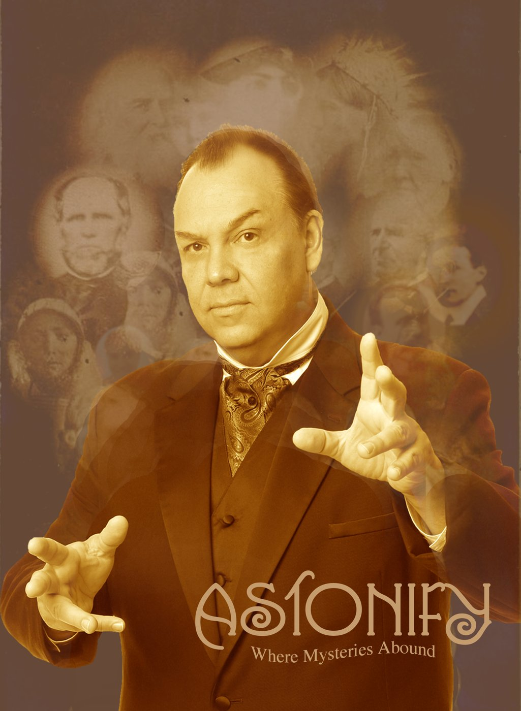

An evening of Victorian parlor magic and a theatrical seance
ASTONIFY is a live, immersive magic show. The audience becomes part of the evening, sometimes from their seats and sometimes in the middle of the mystery itself. There is no stage to hide behind. The whole room is the stage.
You will see impossible things up close, from the side, and from angles a theatre never allows. Imagine watching a person cut in half only a few feet from your chair.

Part of the show, if you want to be
Not everyone wants to be in the spotlight, and that is fine. Some mysteries happen with the whole room at once. Others need a guest or two to step forward. Either way, you will be closer to the magic than you have ever been.
Stage magic, sleight of hand, mental mysteries and grand illusion, woven through true stories from the nineteenth century, when parlor magic and the seance were the most fashionable entertainments of the age.

What people say
Fun, Mystifying, Attention Grabbing!
“Our group thoroughly enjoyed seeing Dean Carnegie's Astonify Show, and could not stop talking about the various tricks he did. Dean was a pleasure to work with and easy to coordinate with. We look forward to seeing the show again!”
Fauquier History Museum at the Old Jail, Warrenton, Virginia
Terrific Performance
“You gave a terrific performance, witty, colorful and fun as well as magical and confounding. How DID you do that?! In addition, you were not just easy to deal with offstage, but relaxed, genial and pleasant.”
The National Theatre, Washington D.C.
So Different, So Fun
“The Astonify Show at The Secret Parlor Theatre was so different and yet it was so much fun! We had a great time and enjoyed the close-up show afterwards as well.”
The Secret Parlor Theatre, Chantilly, Virginia
History and Magic in One
“I wasn't expecting a history lesson, but you hear so many true stories during the show that you come away smarter AND amazed!”
The Secret Parlor Theatre, Chantilly, Virginia

For December
Astonify: The Ghosts of Christmas Past
A nineteenth century, Dickens inspired magic show. Charles Dickens was an amateur conjurer, and this is the kind of evening he might have presented to his own friends and family.
Where Astonify has played
- The Underground Magic Theater, Sterling, Virginia. Dean Carnegie's own fifty seat theatre, which he co-ran and performed in for four years, 2001 to 2005.
- The Secret Parlor Theatre, Chantilly, Virginia. Hired to bring the show in, then hired again.
- Fauquier History Museum at the Old Jail, Warrenton, Virginia. Booked twice.